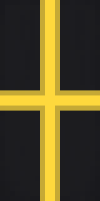
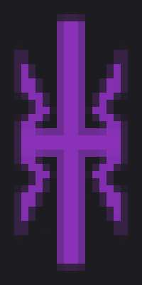

Great Powers
The NSCUType:Democratic Trade & Defence UnionLeader:NSCU ParliamentAt war with:The Eastern UnionThe Riesen Empire (Ceasefire) Description:The North Sea Charter Union was originally established to prevent the Ardecan's economic influence from reaching the nations surrounding the North Sea. Over time similarly aligned nations joined for various economic benefits, and not long before The Great War begun, legislation passed to mandate military allyship between member nations. Their claim in the war is to fight imperialism in Europa. |
|---|
The Riesen EmpireType:EmpireLeader:Kaiser Sieghart WolfAt war with:The Eastern UnionThe Ardecan States The NSCU (Ceasefire) Description:Under the rule of Kaiser Blancke the Riesen Empire seized large amounts of territory across Europa with the aid of chemical weapons. By the time of Kaiser Wolf, the Empire was tired and losing land, calling for peace talks. Envoys from the Ardecan called for unconditional surrender and harsh reparations. Seeing such a surrender as no option, a new generation of Riesen soldiers continue the fight, akin to cornered animals. |
The Ardecan StatesType:Empire (Elective Monarchy)Leader:Popess DionysusAt war with:The Riesen EmpireThe Denshima Empire The UVR Description:With unmatched petrochemical technology and economic influence, the Ardecan states have ruled and taxed Mediterranean and Atlantic trade since the crusades. An old papal empire that once held absolute power over Europa, former loyal followers are now using the war to turn away or rebel, as more acts of tyranny come to light. The recently appointed Dionysus is now rebuilding the Empire in an attempt to save face, and land.

|
The Central UnionType:Democratic Defence UnionLeader:President Jago KovacsAt war with:The Eastern Union (Ceasefire)Description:A more recently formed union of nations and city-states in the heart of Europa to resist potential invasion from all sides. The Eastern Union's attempt to siege the city of Staropest was the original catalyst for the Aldozat detonations at the hands of Armalynx International. Most of their efforts are spent clearing fallout during this time of (relative) peace. |
The Eastern UnionType:Union Bloc (Under Empire)Leader:Emperor Nikolai GlazkovAt war with:The NSCUThe Riesen Empire The Central Union (Ceasefire) Description:Formed before the war begun, the Union was born from countless nations pooling together their military strength towards the Emperor's goals, whilst acting as a strong demonstration against Ardecan supremacy. Seeing the devastation of nuclear arms firsthand, they now seek to be the dominant nuclear power in Europa, while fighting to retain the Empire's territory and assault their enemies.

|
The Denshima EmpireType:Empire (Monarchy)Leader:Empress SaikoAt war with:The Ardecan StatesThe UVR Description:During the rule of Emperor Naruhito, the Denshima Empire seized unprecedented territory across the West Pacific, partly due to the involvement of the Seikō Kikai Corporation and their advanced ballistic calculators. His daugher Empress Saiko, an indirect investor in the corporation, recently took power with the goal of retaining and expanding the Empire against the pressure of the UVR, Ardecan, and Corsair Reach. |
The UVRType:Presidential RepublicLeader:President Jonas HarlowAt war with:The Ardecan StatesThe Denshima Empire Description:A union of former New World colonies, the United Vinstater Republiks have since expanded into one of the most influential Great Powers of the modern age; With a near unmatched military industry and the combined resources of almost an entire continent, they are now using the cover of war to cripple their economic rivals, and secure shipping routes throughout the Atlantic and Pacific, despite the Ardecan's efforts. |
Notable Militias
Berilia OutlawsType:Unorganised Guerrilla ArmyLeader:NoneDescription:A hardly cohesive gang of smaller groups: Locals resisting occupation, convicts seeking freedom in Berilia, rival prospectors, and those who were simply drawn to a more unorthodox career. Throughout The Great War they built and occupied various camps throughout Berilia, trying to form and defend their own fortified settlements. |
|---|
Corsair ReachType:Mercenary ArmyLeader:Various CaptainsDescription:The countless gangs that formed throughout the war to provide where Empires could not. Functioning similarly to pirates or mercenaries, the Corsair Reach mostly operates around the Pacific, delivering shipments between colonies and performing jobs for the civilians. With the war in Europa spreading Ardecan resources thin, the Reach is just beginning to enter business in the Alantic, learning the safest routes. |
NS22Type:Public Espionage ParamilitaryLeader:NoneDescription:Originally founded by members of a retired cavalry regiment; Small groups of nomads, typically ex-military and often on horseback, that seek out covert government and corporate facilities, raid them for classified documents, and sell them to the public to get by. Naturally this business has made them many enemies, though they're often looked kindly upon by civilians. |
Petrichor EuropaType:Anarchist Terrorist ParamilitaryLeader:NoneDescription:A more chaotic offshoot of the Petrichor Levant resistance organisation formed against the Ardecan during the crusades; Seemingly aligned to end modern civilisation in Europa, their actions and attacks have been directly blamed for prolonging or even provoking conflict between nations. |
Notable Corporations
Armalynx InternationalType:Arms ManufacturerOwner:László TüskeNation:The Central UnionDescription:Famed for their precision firearms, Armalynx has been supplying the Central Union's military for almost as long as they've been in business. Following the Aldozat detonations, representatives from Armalynx confirmed that those prototype nuclear bombs were of their making, but that soldiers evacuated all civilians before they were used against the Eastern Union. They remain an intimidating party to this day. |
|---|
Gintenjō ZaibatsuType:Investment Managment CompanyOwner:Empress SaikoNation:The Denshima EmpireDescription:Originally funded by the princess Saiko herself, Gintenjō owns overwhelming shares in Seido Kōshō, Seikō Kikai, and countless other industry monopolies within the Denshima Empire. Being such an influential corporation, and owned by the Empress, Gintenjō Zaibatsu has become an intimidating symbol of economic power across the Pacific. |
Snyder PMSCType:Private Military & Security CompanyOwner:Maine SnyderNation:The UVRDescription:Once a small company of ex-military offering security for private companies, Snyder PMSC has since outgrown said companies in their own production, manufacturing a limitless supply of modern firearms and offering private soldiers on par with the militaries of some Great Powers. About half of Snyder's contracts are with the UVR itself, providing munitions and training to their army. |